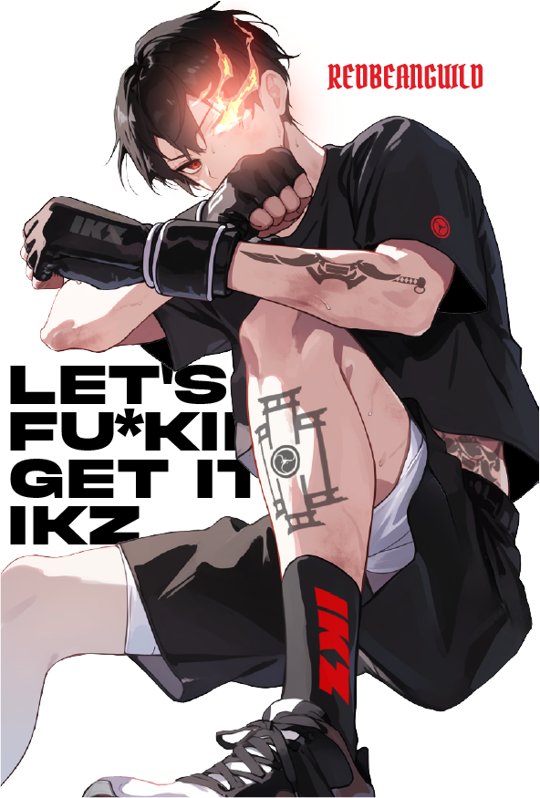
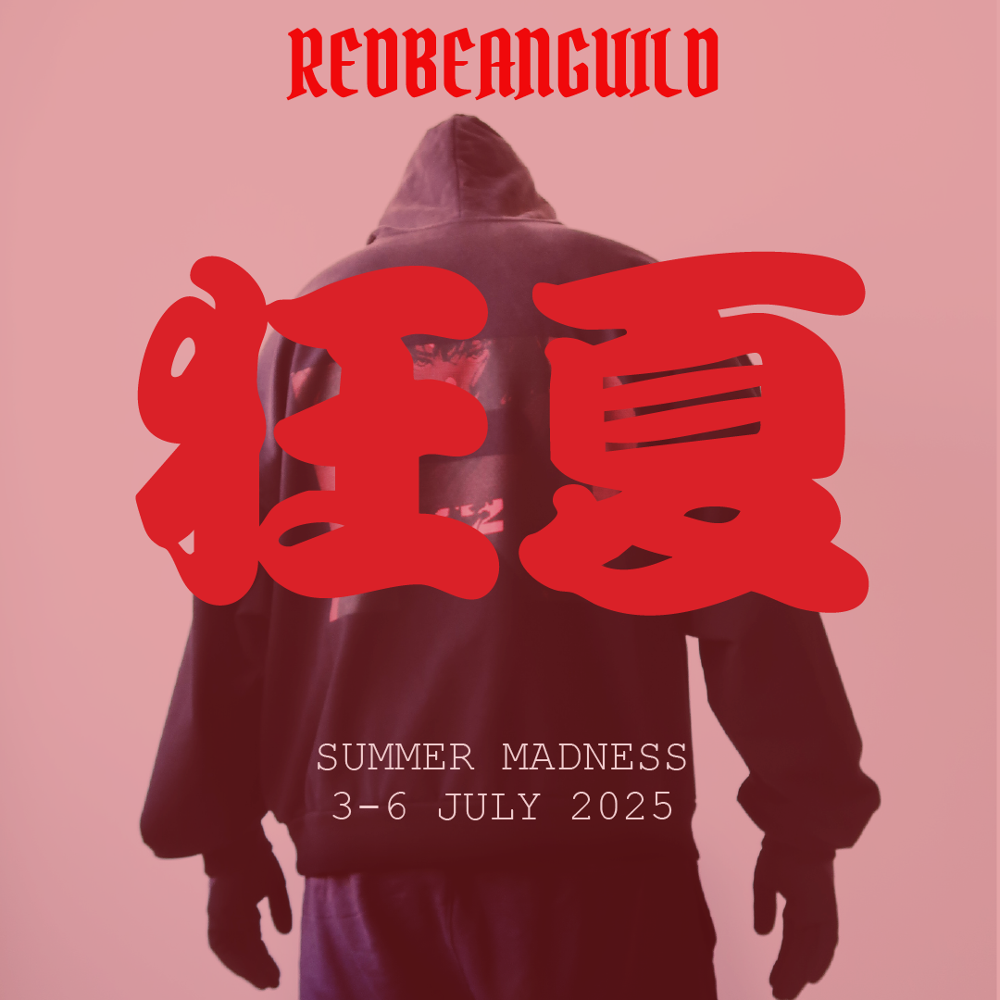
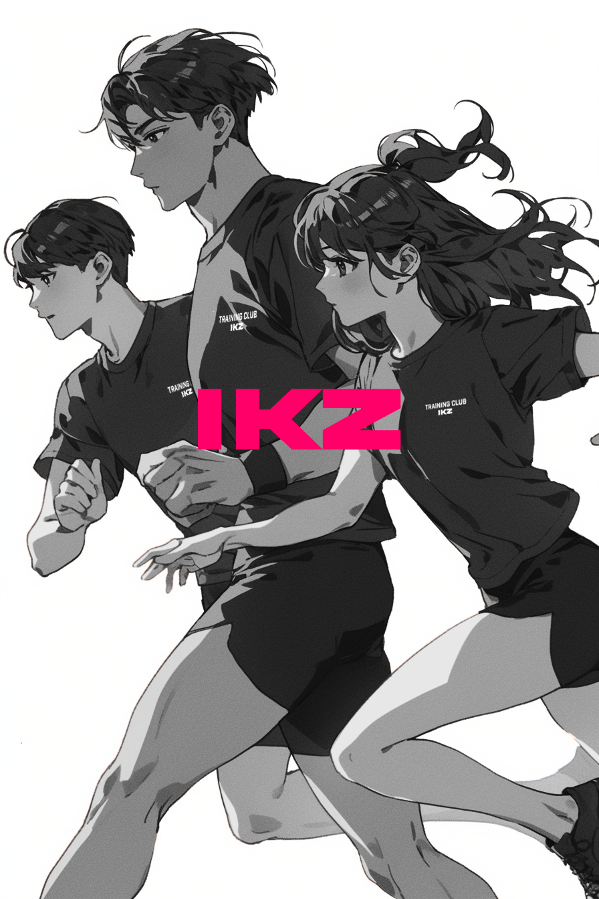
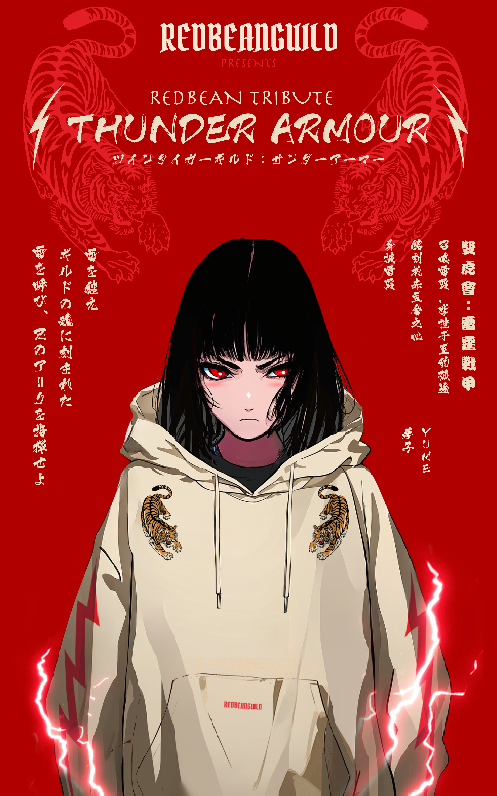
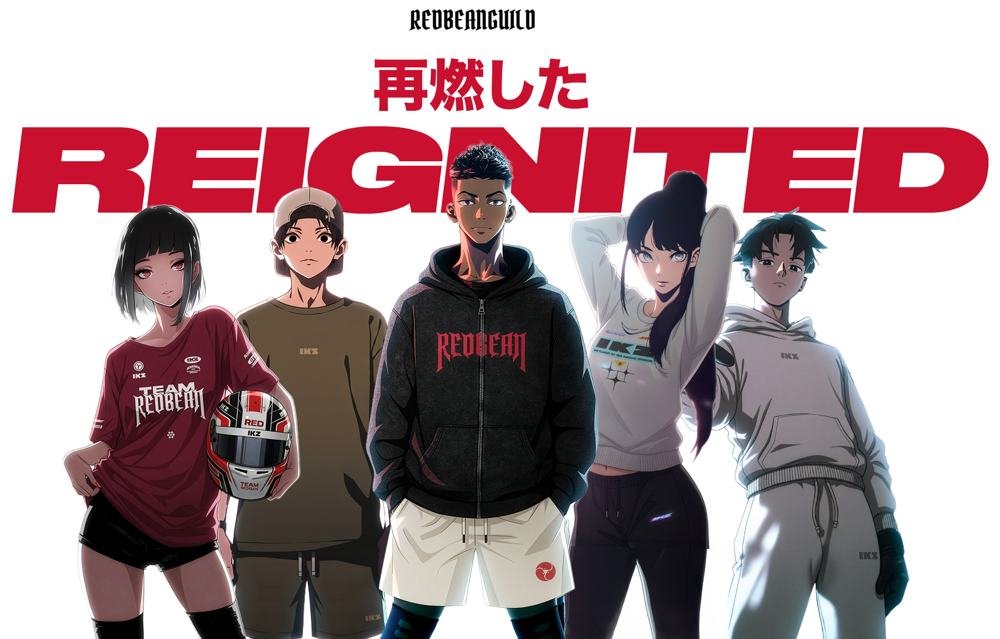
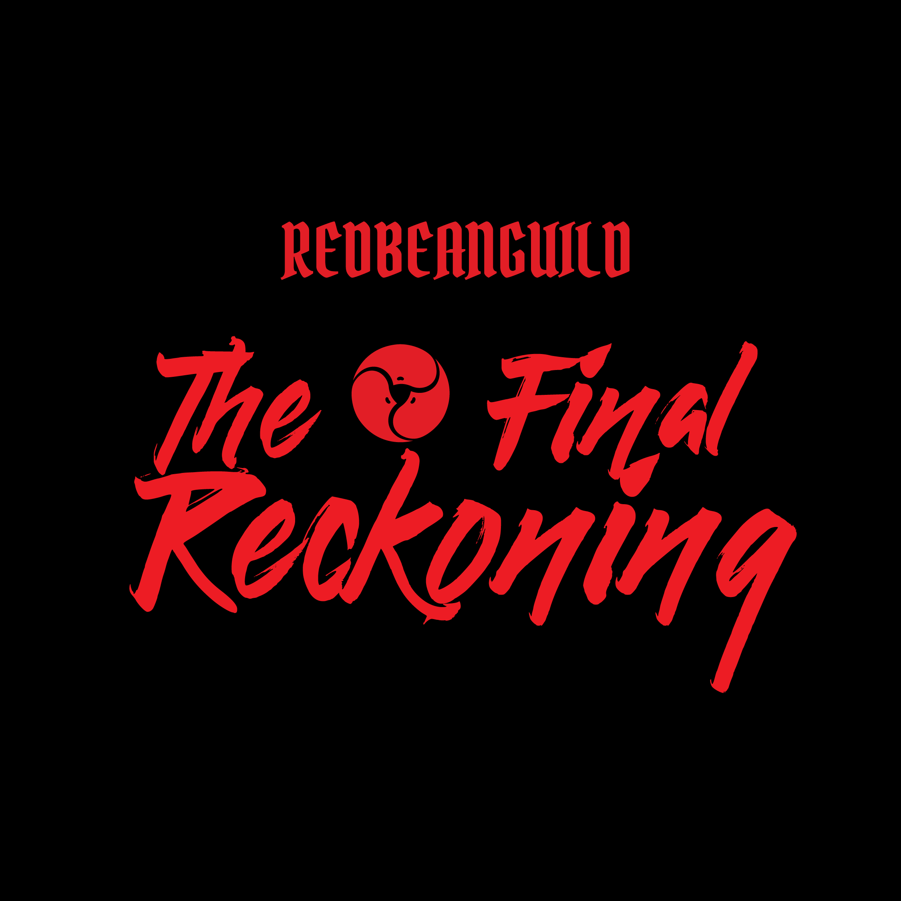

REDBEANGUILD
リデンプション
REDEMPTION
DROP 01
2026年シーズン · 2026 SZN
Est. MMXXIII
レッドビーングルード · EST. MMXXIII
道場
道場と仲間 — The dojo. The crew. The grind.
Red Bean Guild (RBG) is for those who refuse to drift. We set goals. We track progress. We train daily. Discipline over excuses. Action over talk. Together, we build momentum, sharpen our craft, and level up in real life. This is our arc.
鍛錬. 仲間. 覚悟. — Train. Crew. Resolve.

リデンプション
REDEMPTION
DROP 01
報復
RETALIATION
DROP 02

サマーマッドネス
SUMMER MADNESS
DROP 03

IKZトレーニングクラブ
IKZ TRAINING CLUB
DROP 04

雷鎧
THUNDER ARMOR
DROP 05

再点火
REIGNITED
DROP 06

最後の審判
THE LAST FINAL RECKONING
DROP 07
段位は与えられない、積み上げるもの。
01
入門
INITIATE
You've joined the guild and stepped through the gate. Welcome to the beginning.
02
浪人
RONIN
Four orders placed. You're no longer just passing through — you're committed.
03
剣士
KENSHI
Ten orders or more. Battle-tested. You have receipts. Peers look to you for how it's done.
04
ギルドマスター
GUILD MASTER
Twenty orders or more. You're deep in it — a pillar of the guild and trusted by all.
05
大ギルドマスター
GRAND GUILD MASTER
Rare. Reserved for those who've shaped the guild itself — founding members, exceptional contributors, those whose arc is undeniable.
生きる証明。
領域を知れ、道を歩め。
ギルドに参加する / JOIN THE GUILD
ドロップ情報、限定コンテンツを最速でお届け。